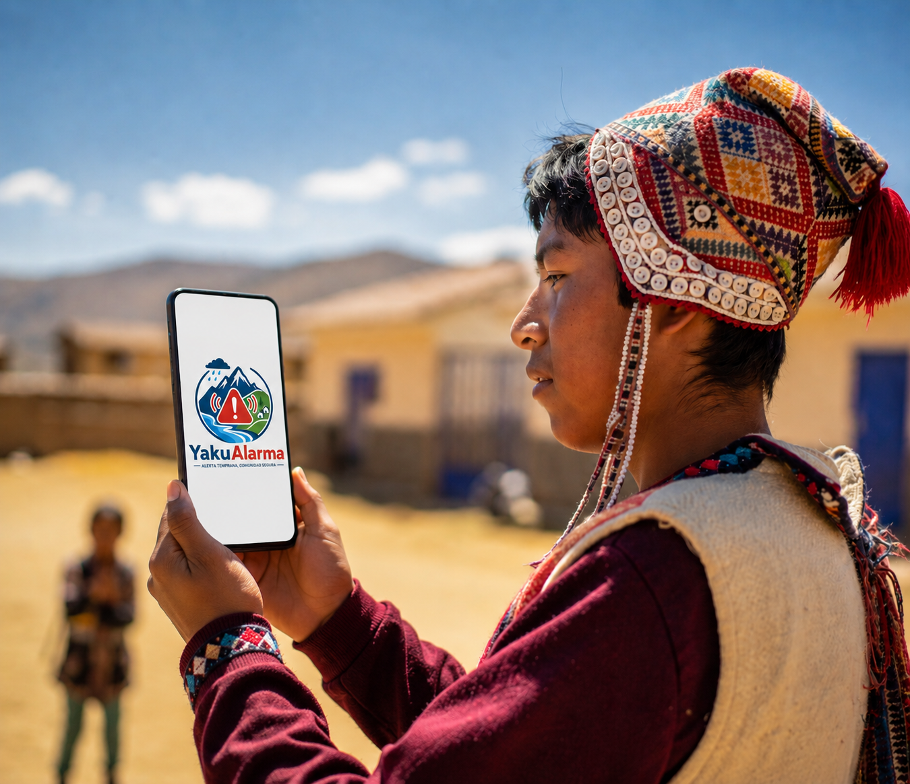
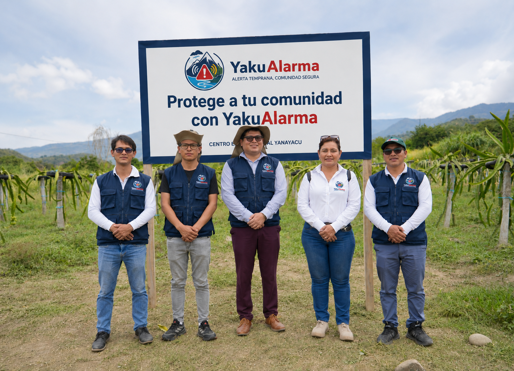
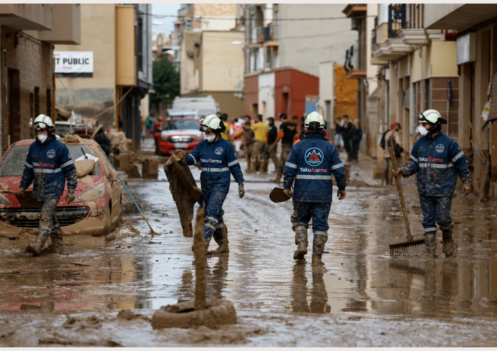

Reporta eventos con GPS incluso sin internet, visualiza el mapa comunitario y recibe alertas emitidas por tu municipalidad para actuar a tiempo frente a emergencias.

Reportes ciudadanos sincronizados
Comunidades rurales conectadas
Funcional sin internet
Costos para municipios y ciudadanos

Somos Yakualarma, una iniciativa tecnológica peruana creada para fortalecer la gestión del riesgo en comunidades rurales expuestas a lluvias intensas, huaycos, activación de quebradas y deslizamientos.
Nacemos ante la necesidad urgente de que los ciudadanos, especialmente en zonas alejadas, cuenten con una herramienta sencilla, accesible y confiable que les permita reportar eventos de peligro en tiempo real, incluso sin conexión a internet.
Nuestro equipo integra especialistas en tecnología, gestión del riesgo de desastres, desarrollo comunitario y experiencia rural.

🎯 Misión
Desarrollar soluciones tecnológicas accesibles que permitan a las comunidades rurales del Perú reportar y monitorear eventos de riesgo de forma colaborativa, fortaleciendo la capacidad de respuesta de los gobiernos locales y reduciendo el impacto humano y material ocasionado por fenómenos hidrometeorológicos.
🌄 Visión
Ser la plataforma líder en el Perú para la gestión comunitaria del riesgo, reconocida por empoderar a miles de ciudadanos y municipalidades con información confiable, en tiempo real y enfocada en la prevención, contribuyendo a un país más seguro, resiliente y preparado frente a desastres naturales.
Comienza a usar Yakualarma en menos de 5 minutos
Disponible gratis en Google Play y App Store para cualquier smartphone
Toma una foto, selecciona el tipo de emergencia y agrega una breve descripción.
Si no tienes internet, el reporte se guarda. Cuando vuelve la señal, se envía solo.
Si tu municipalidad emite una alerta, te llegará una notificación directa para actuar a tiempo.
Permite reportar emergencias antes de que aumenten y ayuda a salvar vidas.

Las autoridades reciben información en tiempo real, mejorando la atención y la coordinación.
Los reportes provienen de los propios ciudadanos, quienes conocen el territorio.

La plataforma es libre de costo para comunidades, vecinos y municipalidades.
Únete a más de 1500 usuarios que protegen a su comunidad y su seguridad con YakuAlarma
Unete a Nosotros